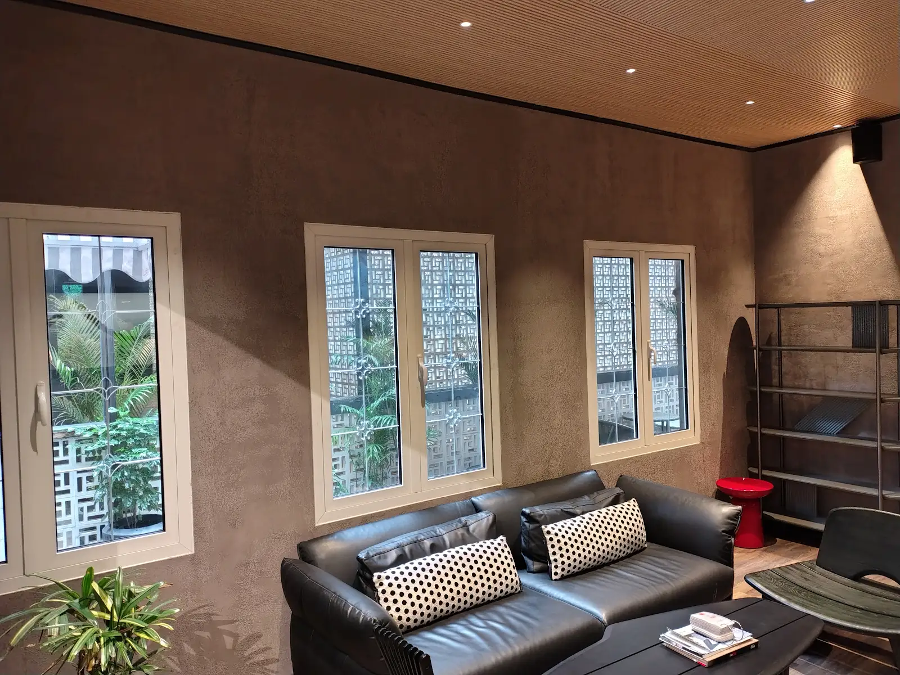
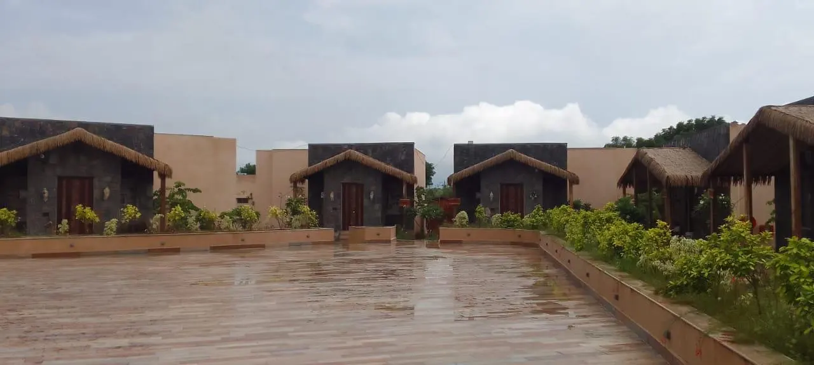

Contexture by Hey
Lime
Wash.
A softly clouded, tonal finish that gives walls subtle depth instead of a flat field of colour.
Explore catalogue ↗
Soft tonal variation
Depth that changes with the light.
Contexture by Hey Lime Wash is designed for projects that favour atmosphere and nuance. Its gentle surface movement works across interiors and exteriors, providing a tactile architectural backdrop.
Living spacesA calm, layered backdrop
Exterior wallsSoft, earthy material depth
Feature zonesQuiet surface character
